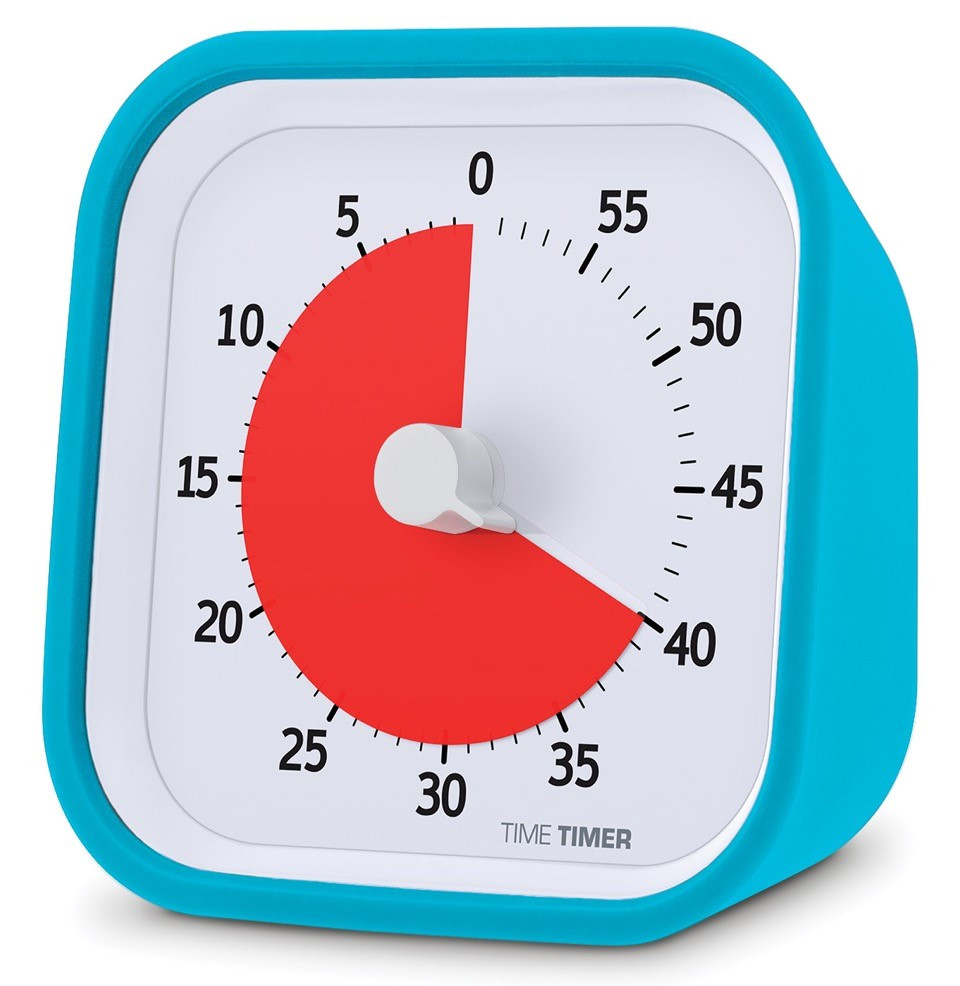

Lean Workshop
http://marcodussin.github.io/lean_tag
TAG Innovation School Master
Marco Dussin
marco@duss.in - @MarcoDussin
Qualcosa su di me

Front and Back End Engineer, Coworker @ TAG Padova, Product Designer, Beer Lover
http://marco.duss.in
it.linkedin.com/in/marcodussin/
Qualcosa su di voi
Slide rossa
Titolo di una sezione
Slide bianca
Spunti di discussione
Slide verde
Question time
Slide gialla
Workshop time
The Marshmallow Challenge
Link alla TED talkTime and space
La frammentazione fa male alla produttività: serve una media di 23 minuti perchè un lavoratore distratto torni al proprio task
Meeting infiniti e continui fanno male alla produttività
Il "context switch" fa male alla produttività
Gara di numeri
Esempio di impostazione del lavoro in "time boxes"
- Scegli un’attività da completare.
- Imposta il timer a 25 minuti
- Lavora sulla tua attività senza distrazioni finché il timer non avrà suonato.
- Prenditi una pausa di 5 minuti.
- Ogni 4 “boxes” prenditi una pausa più lunga di 15-30 minuti.
Come lavorare in gruppo?
"Stand Up Meetings"

Alcuni consigli per la discussione
- Usare poca tecnologia, preferire oggetti materiali (pennarelli, post-it...)
- Esplicitare le fasi divergenti e quelle convergenti
- Separare le discussioni di business da quelle tecnologiche
- Immaginare la demo
- Coinvolgere tutti i ruoli aziendali
- Misurare l'allineamento usando esercizi di feedback
Il menu di oggi
| Argomento | Boxes |
|---|---|
| Tempo già passato | 1 |
| Introduzione al percorso Lean | TBD |
| Varie, domande, blablabla | TBD |
| Totale | 14 |
Introduzione al percorso Lean
11,6 secondi
(Jon Jenkins, Velocity 2011, https://youtu.be/dxk8b9rSKOo)
Che cosa è la "lean production"?

Muda
"Muda" è una parola giapponese e significa "spreco"
Lo spreco è qualsiasi attività umana che assorbe risorse ma non crea
VALORE
Ohno ha identificato sette tipi di muda
- difetti nei prodotti
- sovrapproduzione non necessaria
- magazzini di beni in attesa di ulteriori lavorazioni
- lavorazioni non necessarie
- spostamenti di persone non necessari
- trasporti di beni non necessari
- attese
A questi si potrebbe aggiungere, al giorno d'oggi, anche la progettazione di beni e servizi che non soddisfano i bisogni dei clienti
5s Number Game
Link5s per eliminare lo spreco
- 1 Seiri - separare: separa ciò che ti serve da ciò che non è funzionale all'attività e quindi crea disturbo e disordine, quindi spreco di tempo o di risorse (muda); un termine alternativo con la S è scarta.
- 2 Seiton - riordinare: metti a posto tutto quello che è utile, il vecchio motto "ogni cosa al suo posto e un posto per ogni cosa"; un termine alternativo con la S è sistema.
5s per eliminare lo spreco
- 3 Seiso - pulire: tieni tale ordine costante e pulisci, un ambiente pulito ed ordinato è un ambiente che "non nasconde" le inefficienze (una logica molto in linea con il Total Quality Management TQM); un termine alternativo con la S è spazza.
- 4 Seiketsu - sistematizzare o standardizzare: definisci delle metodologie ripetitive e canonizzate da utilizzare per continuare queste attività di razionalizzazione delle risorse e degli spazi lavorativi;
- 5 Shitsuke - diffondere o sostenere: fai che questo modo di pensare ed agire sia pervasivo per tutte le attività aziendali.
Che cosa è il valore?
Il valore viene creato dal produttore
Il valore è difficile da calcolare per il produttore
Il valore può essere definito solo dall'utente finale
Il valore va espresso in termini di uno specifico prodotto, in grado di soddisfare le esigenze del cliente a un dato prezzo e in un dato momento
Valore di un viaggio aereo
- per il viaggiatore
- per la compagnia
- per il costruttore di aerei
Il valore viene prodotto tramite un "flusso di valore"
attività che creano valore
attività che non creano valore sono obbligatorie e/o inevitabili
attività che non creano valore
E, infine, serve una struttura che permetta ai flussi di valore di "fluire"
Toyota Production System (TPS)
Miglioramento Continuo (Kaizen)
Kanban
Kanban, David J. Anderson, 2007
Kanban board (immagine di @ziobrando)
Kanban pizza game
Agile42 Kanban Pizza GameThe core practices of Kanban
- Visualize the Workflow
- Limit your Work in Progress (WIP)
- Manage the Flow
- Implement Feedback Loops
- Make Process Policies Explicit
- Improve Collaboratively
Che cosa è il metodo "lean startup"?

The Lean Startup methodology has as a premise that every startup is a grand experiment that attempts to answer a question. The question is not "Can this product be built?" Instead, the questions are "Should this product be built?" and "Can we build a sustainable business around this set of products and services?" This experiment is more than just theoretical inquiry; it is a first product
Eric Ries
NON costruiamo oggetti che la gente NON vuole


Che cosa è la "lean UX"?
Il concetto di Lean UX nasce dal mettere assieme i principi di Lean Startup con le teorie di sviluppo agile di software. In aggiunta a queste due fondamenta, ce n'è una terza altrettanto importante: il Design Thinking come metodo adatto a fornire soluzioni pratiche e creative ai problemi.
Che cosa è la "lean UX"?
In aggiunta ai "pilastri" precedenti, la Lean UX pone meno enfasi nei "DELIVERABLES" e si focalizza maggiormente sulla comprensione condivisa dell'esperienza utente che si desidera fornire


Break down the silos!

Lo scopo è arrivare prima possibile a un "prototipo"
Il prototipo è il modello originale o il primo esemplare di un manufatto, rispetto a una sequenza di eguali o similari realizzazioni successive. Normalmente costruito in modo artigianale e in scala 1:1, sul prototipo verranno effettuati collaudi, modifiche e perfezionamenti, fino al prototipo definitivo, da avviare alla produzione in serie.
da Wikipedia
Quindi un prototipo è una primissima versione di una idea?
Sì, ma con qualcosa in più: è TESTABILE

Sviluppo agile di software
Stiamo scoprendo modi migliori di creare software,sviluppandolo e aiutando gli altri a fare lo stesso.
Grazie a questa attività siamo arrivati a considerare importanti:
Gli individui e le interazioni più che i processi e gli strumenti
Il software funzionante più che la documentazione esaustiva
La collaborazione col cliente più che la negoziazione dei contratti
Rispondere al cambiamento più che seguire un piano
Ovvero, fermo restando il valore delle voci a destra,
consideriamo più importanti le voci a sinistra.
THE END